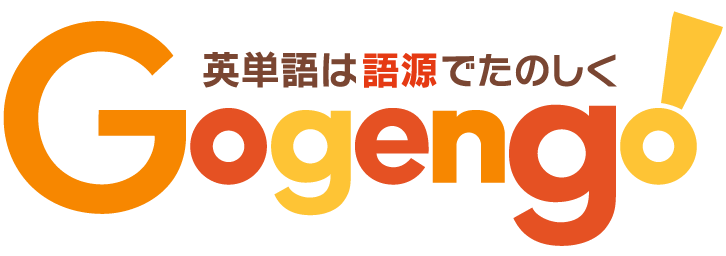

自己紹介
「英単語の語源の探求」と「ソフトウェア開発」を 15 年ほど続けている。2010 年に会津大学を卒業。
英単語を語源でたのしく学ぶためのウェブサイト Gogengo! を 2009 年より運営。『ラジオ英会話』(NHK 出版) で 3 年にわたり語源のコラムを執筆。2020 年度より岐阜大学の教科書に Gogengo! が掲載。電子書籍『Gogengo! Dictionary 3,000 語版』(BOOTH) を執筆。ウェブサイト『語源の広場』を運営。
2016 年よりフリーランスのエンジニアとして活動を始める。共訳書に『アジャイルサムライ』(オーム社) がある。ソフトウェア開発で大切なことは、「思い・背景・理由を共有し、期待と結果を調整し、学び合い、理想の希望を実現できるようにすること」だと考えている。
大事にしている思いは「生きることは学ぶこと。せっかく学ぶなら、たのしく」。
Gogengo!
Gogengo! は英単語の成り立ちをまとめたウェブサイトです。言葉の成り立ちは「語源」と呼びます。たとえば company の語源は、com、pan、y に分かれ、com は「一緒に」、pan は「パン」、y は「すること」を意味します。これらを合わせると「一緒にパンを食べること」となり「仲間」を想起させます。company の意味である「会社」は、事業を成し遂げる「仲間」が集まる場所です。このように語源で英単語を学ぶと印象に残りやすいです。2009 年に公開しました。
2022 年度・2020 年度の『ラジオ英会話』の語源コラムを担当しています。2020 年度より岐阜大学の Reading の教科書に Gogengo! を掲載いただいています。
アジャイルサムライ

『アジャイルサムライ』はソフトウェア開発の進めかたを解説する本です。翻訳にあたっては原文の気さくで親しみやすい雰囲気を表せるように心がけました。著者の Jonathan Rasmusson さんは、アジャイルをはじめて学ぶ人がたくさんの本を読まなくていいように、7 冊の関連書を本書にまとめました。ですので、この 1 冊でアジャイルの考えかたを網羅できます。プロジェクトに関わるチームで本書を読むと、お互いの認識を合わせやすいです。2011 年に初版が出ました。
仕事のご依頼
執筆に関して
メールを「tsunokake.takumi [アットマーク] gmail.com」までお願いいたします。
Gogengo! のデータ利用に関して
メールを「tsunokake.takumi [アットマーク] gmail.com」までお願いいたします。
ソフトウェア開発の案件に関して
メールを「tsunokake.takumi [アットマーク] gmail.com」までお願いいたします。
ソフトウェア開発に関するわたしの経験はこちらにまとめてありますのでご参考まで。
単発の講座に関して
準備中です。英単語の語源に関する講座と、ソフトウェア開発に関する講座を始める予定です。
SNS
思い
生きることは学ぶこと。 せっかく学ぶなら、たのしく。 たのしく学ぶことは、生きる力となるから。 たのしく生きることにつながるから。